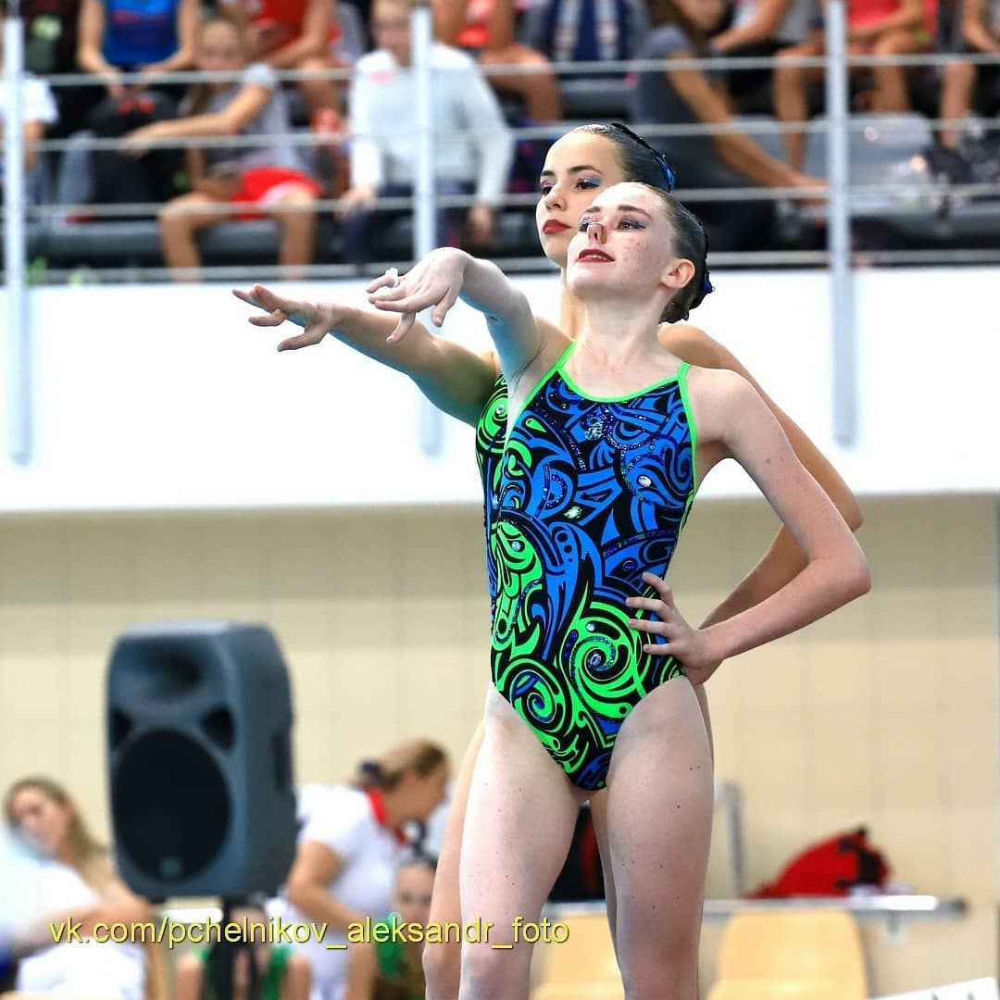
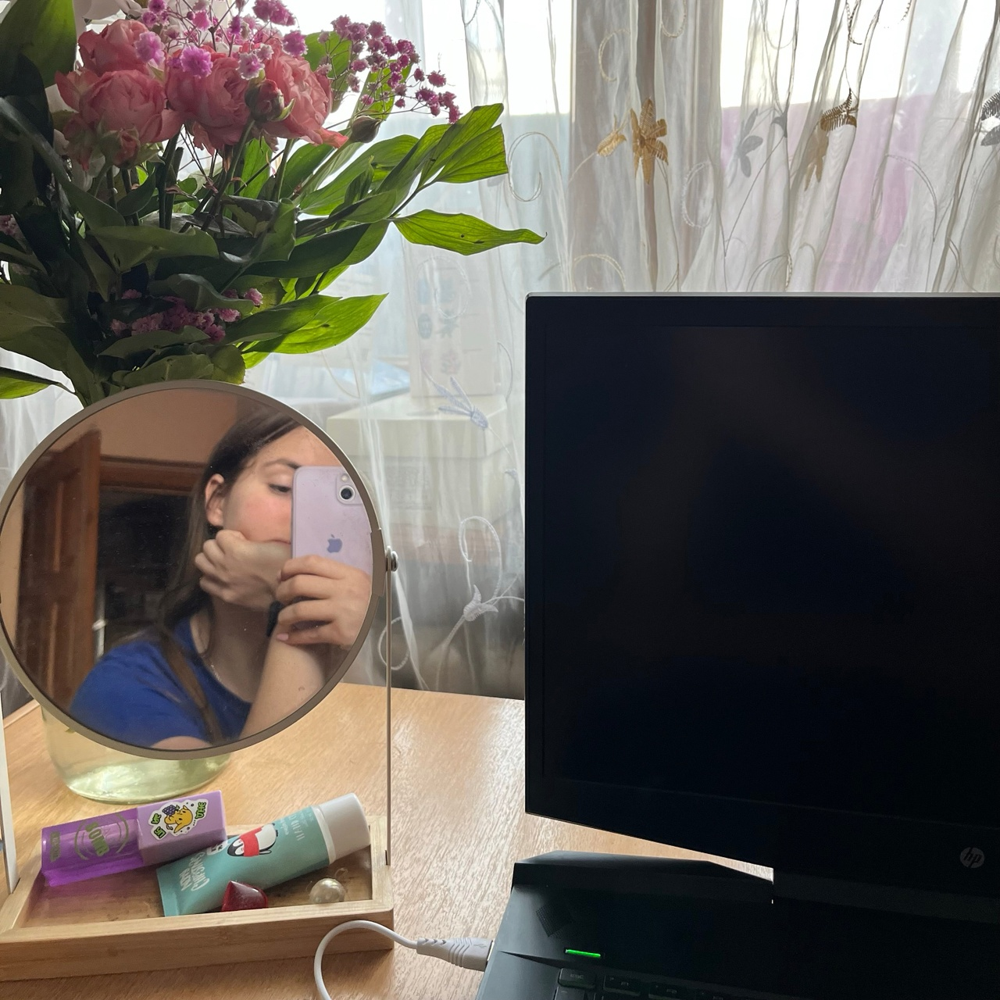

Achievement

В 17 лет, занимаясь синхронным плаванием, я выполнила
программу и получила разряд "Мастер спорта России"

Я закончила 11 классов, написала ЕГЭ на 280 баллов, поступила
в ЮФУ. На данный момент учусь на 3 курсе и работаю.

Всю жизнь я развивалась в психологическом
и социальном плане. У меня много хороших друзей, знакомых, и я счастлива.